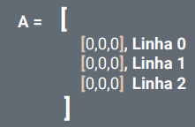
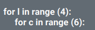
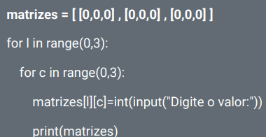
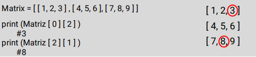
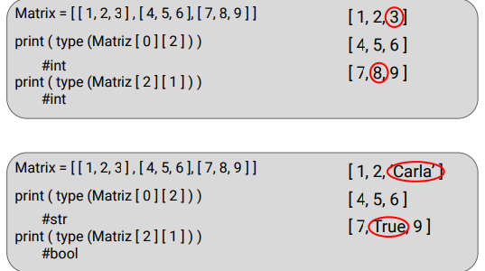
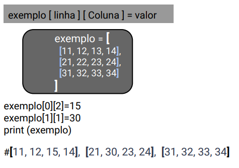

São a generalização de objetos simples como listas e tuplas
Nos permitem armazenr elementos mais complexos em uma única variável,como por exemplo operações com matrizem de matemática,processamento de cada pixel presente em uma imagem,informações em cada ponto do mapa de uma loalização e josgos como batalha naval e xadrez.
uma matriz é declarada com um colchete envolvendo listas,sendo que cada lista remete a uma linha da matriz onde:for i in range e for c in range quer dizer,para cada linha seram tantas colunas...
 Exempo:
Para acessar determinado elemento de uma matriz,devemos determinar a posição da linha e da coluna
Exemplo:
Para verificar o tipo de dado e o elemento,utilizamos a função type
Conseguimos alterar um elemento usando suas coordenadas de matriz e coluna
O import copy facilita a vizualização do código comprimindo-o